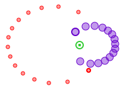

Double-click this node to open a Tracker tab file (trk) that defines a dynamic model of a binary star system. Note that there is no video and no additional documentation--for those you must save your work as a Tracker project instead.
